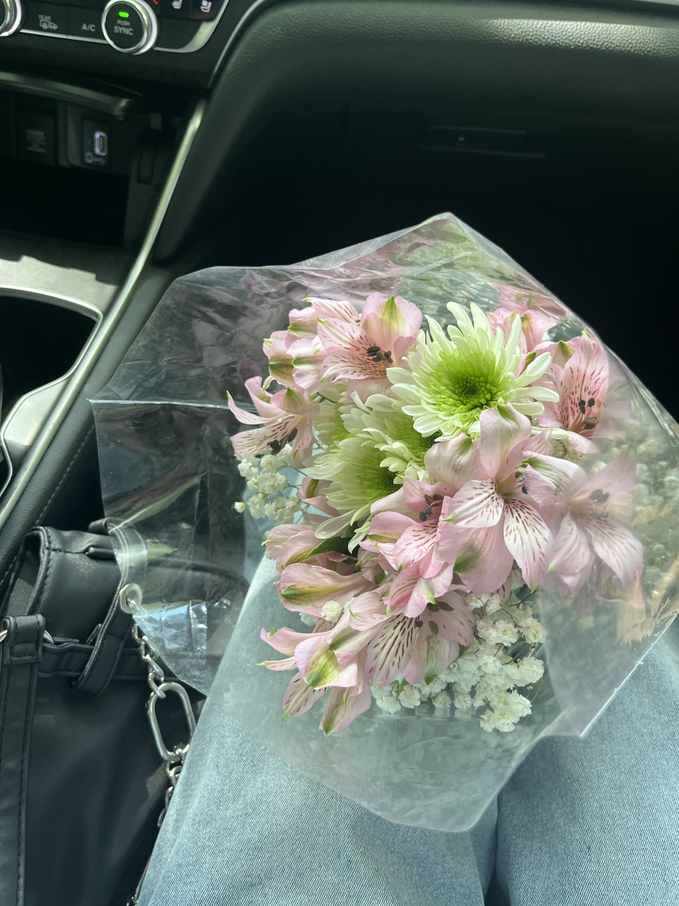

Pink Alstroemeria
Pink alstroemeria symbolizes gentle romance, playfulness, tender affection, and admiration.
When I give you these, I’m telling you how much I admire you and how happy I am that we can be playful together.
Pink petals, fresh green centers, and tiny white flowers all gathered together.

Pink alstroemeria symbolizes gentle romance, playfulness, tender affection, and admiration.
When I give you these, I’m telling you how much I admire you and how happy I am that we can be playful together.
Combining white and green chrysanthemums signals honest, steadfast loyalty paired with a fresh, hopeful new beginning.
When I give you these, I’m promising to be someone you can count on as we see where this beginning takes us.
Baby’s breath symbolises purity, everlasting love, innocence, sincerity, and new beginnings.
When I give you Baby’s Breath, I’m saying that I want to meet each new part of our story with an honest heart.